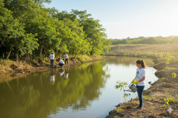
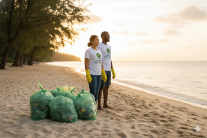
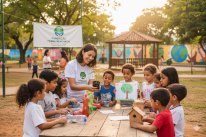
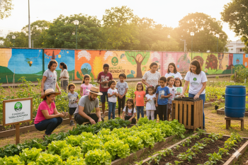
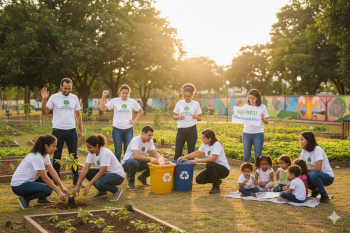
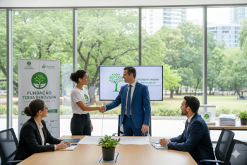
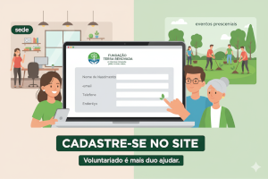
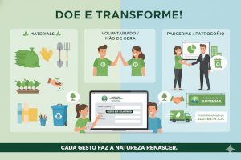

Projetos Sociais da Fundação Terra Renovada
1.Projeto Reflorestar
Objetivo: Plantio de árvores em áreas degradadas e reflorestamento de matas ciliares.
Atividades: Mutirões de plantio, acompanhamento do crescimento das mudas e manutenção das áreas.
2.Projeto Limpeza e Conservação
Objetivo: Limpeza de rios, praias, praças e parques urbanos.
Atividades: Coleta de lixo, separação de recicláveis e conscientização comunitária.
3.Projeto Educação Ambiental
Objetivo: Levar conhecimento sobre sustentabilidade e preservação da natureza para escolas e comunidades.
Atividades: Palestras, oficinas de reciclagem, jogos educativos e visitas guiadas à natureza.
4.Projeto Comunidade Verde
Objetivo: Engajar a população local em ações de sustentabilidade e melhorias ambientais.
Atividades: Hortas comunitárias, compostagem e capacitação para práticas sustentáveis.
5.Projeto Voluntariado Ativo
Objetivo: Engajar voluntários para atuarem em todos os projetos da ONG.
Atividades: Plantio de árvores, limpeza de áreas verdes, eventos educativos e campanhas de conscientização.
6.Projeto Parcerias Sustentáveis
Objetivo: Trabalhar com empresas e outros órgãos para patrocínio e doações de materiais.
Atividades: Desenvolvimento de projetos patrocinados, fornecimento de recursos e divulgação de ações.
Como ser Voluntário na Fundação Terra Renovada
Cadastre-se no site:
Acesse o site da ONG, vá até um dos eventos presenciais ou na nossa sede.
Preencha o formulário de voluntariado com informações básicas: nome, contato, idade e endereço.
Voluntariado é mais do que ajudar
Como Doar
Mesmo pequenas contribuições fazem grande diferença!
| Tipo de doação | Exemplos |
|---|---|
| Materiais | Sacos de lixo, luvas, pás, mudas, sementes, recipientes, materiais de oficina |
| Doação em dinheiro | Conta bancária da instituição, PIX, campanhas online(vaquinhas eletrônicas) |
| Voluntariado/mão de obra | Pessoas se inscrevem nas ações práticas |
| Parcerias com empresas/patrocínio | Empresas podem patrocinar eventos, fornecer insumos, logística, divulgação |
| Doações recorrentes/"amigos da fundação" | Pessoas que doam mensalmente um valor fixo pequeno |